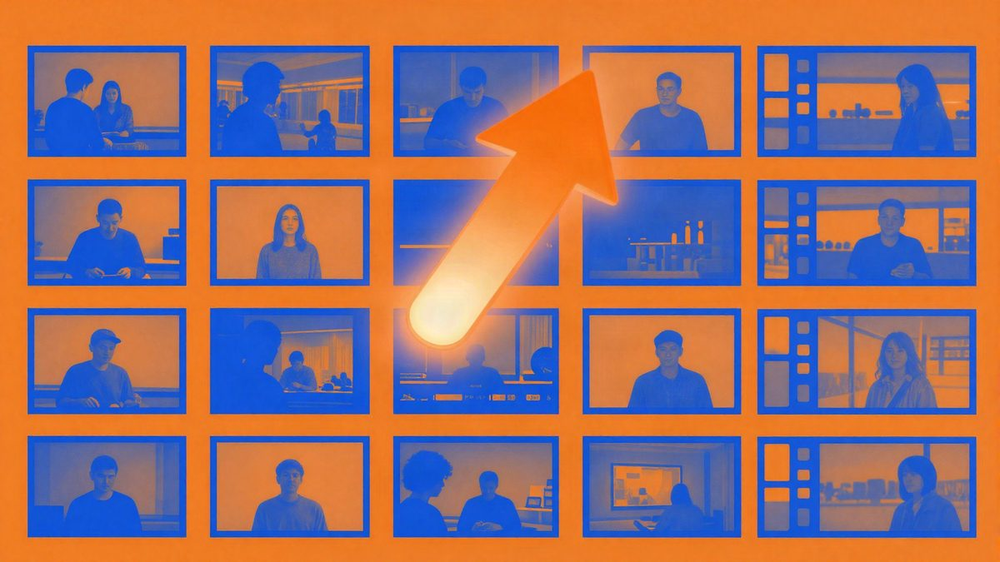

Karpathy je uz Claude u dva sata napravio HackerTube, YouTube s videima koje preporučuje Hacker News

Andrej Karpathy je uz Claude Code u dva sata složio HackerTube, web u YouTube stilu na kojem je 6.454 videa koje su korisnici Hacker Newsa godinama preporučivali. Videi i dalje dolaze s YouTubea, a poredak ovisi o ljudskim preporukama, ne o klikovima ni vremenu gledanja.
Andrej Karpathy, jedno od najpoznatijih imena u području umjetne inteligencije, u petak navečer oko 23 sata otvorio je YouTube i na početnoj stranici našao samo napuhane naslovnice i stare teme. Sutradan je u Claudeu napravio vlastitu verziju. Rezultat je HackerTube (hackertube.org), a cijeli posao, prema njegovim riječima, trajao je dva sata.
Stranica izgleda kao YouTube. Lijevo je navigacija s označenim, pogledanim i spremljenim videima, a desno popis preporuka s naslovnicama, datumom objave i brojem pregleda. Svi videi i dalje dolaze s YouTubea, ali ostali su samo oni koje su Hacker News korisnici godinama preporučivali u objavama i komentarima. Takvih je videa 6.454.
Kako radi
Videe možeš tražiti ili pregledavati po temama, među kojima su umjetnost, softversko inženjerstvo, povijest, poslovanje i igre. Dostupne su i personalizirane preporuke. Na stranici pojedinog videa vide se komentari s Hacker Newsa te podatak koliko je ljudi video preporučilo i kada.
Prijava nije potrebna, a stanje gledanja sprema se lokalno u pregledniku. Umjesto naslovnice koju je postavio autor, prikazuje se kadar iz sredine videa. Podatke je moguće izvesti i dati vlastitom AI agentu da napravi drugu verziju.
Karpathy je koristio desktop aplikaciju Claude Code na Macu, s modelom Claude Opus 5.5 i srednjom razinom razmišljanja. Zadatak je zadao jednom rečenicom: napraviti stranicu u YouTube stilu koja sadrži samo videe što su se godinama preporučivali na Hacker Newsu. Sam je napravio tri stvari. Izradio je Google Cloud API ključ za dohvat metapodataka videa, pokrenuo VPS i kupio domenu. Pisanje koda, obradu podataka, deploy, sigurnosna pojačanja i optimizaciju odradio je Claude. Karpathy kaže da tradicionalno programiranje i rad u terminalu gotovo više ne rade.
Ograničenja
HackerTube nije novi YouTube. Nema vlastiti hosting videa, uploade, autorska prava ni isplate autorima, nego se oslanja na YouTube i zajednicu Hacker Newsa. Riječ je o sloju za odabir i preporuke iznad postojeće platforme. Ni sama zajednica nije reprezentativna, pa njezin ukus ne znači nužno i kvalitetu. Neki ljudi navode da pretraga ponekad vraća nerelevantne rezultate. Među najgledanijim videima su i stari hitovi poput Baby Sharka, Gangnam Stylea i Rickrolla.
Karpathy je spomenuo i da je nekad održavao alat arxiv-sanity za znanstvene radove, ali ga je ugasio jer je održavanje bilo prezahtjevno. Danas bi, kaže, takav posao bio puno lakši.
Projekt je potaknuo sličnu raspravu na društvenim mrežama. Netko je na isti način izradio Hacker Papers s više od 1.000 radova s arXiva, a netko stranicu s preporukama za više od 15.000 knjiga izvučenih iz objava na Hacker Newsu. Postoji i neslužbena verzija za Android TV na hackertube.tv. Iz toga proizlazi da uz AI agenta svatko može sam odrediti kako mu se sadržaj preporučuje, umjesto da to radi platforma.
Izvor: ifanr (爱范儿)